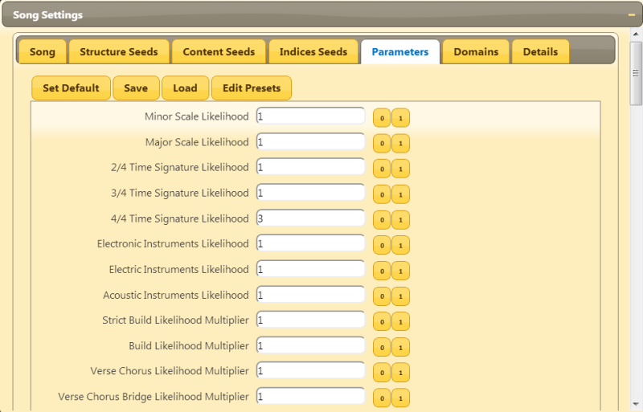
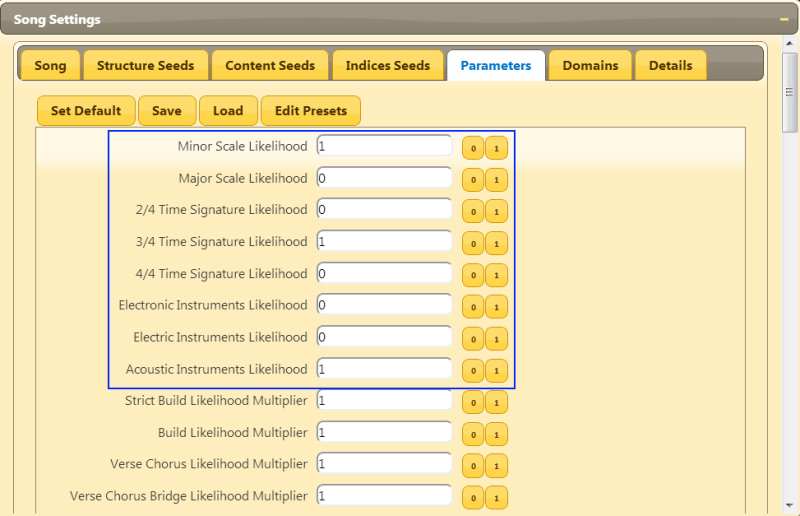
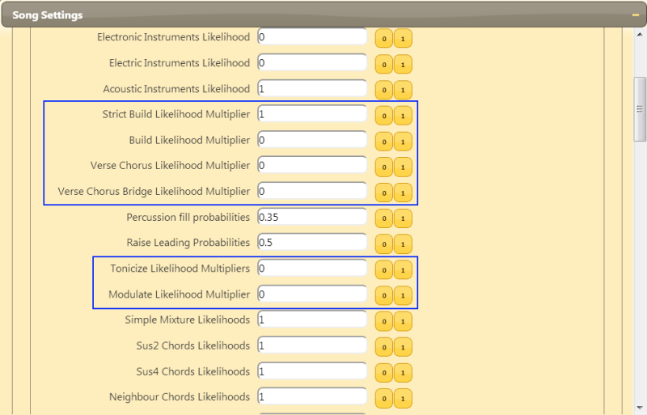
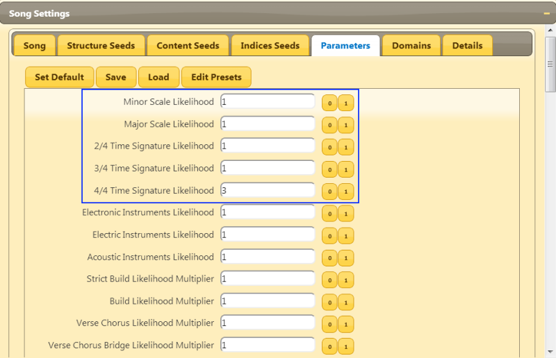
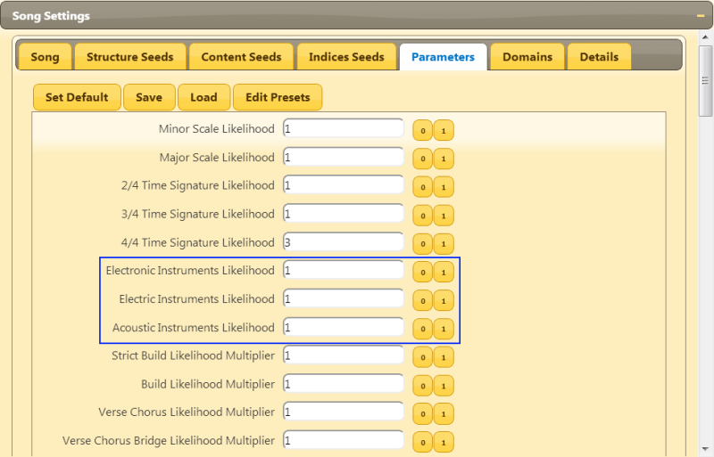

Parameters Tutorial
Welcome to the third tutorial about Abundant Music!
This tutorial is about the "Parameters" tab in the "Song Settings" window. In this tab, we will get a bit more fine-grained control of the the resulting song by access to some of the probabilities and likelihoods that Abundant Music uses for scale, time signature, instruments, song structure, harmony and a lot more.
A short "clarifying" comment: Likelihoods can be any positive number and will later be translated into a probability, which must be a value between 0 and 1. Likelihoods are used in those places where you don't want to manually make sure that all probabilities sum up to 1, which must be the case for or probability distributions.
Exploring Parameters
We are going to play with some parameters that control the scale, instruments, harmony and structure of the song.
Start by generating a new, fresh song that you like.
Then, select the "Parameters" tab in the "Song Settings" window.
We are going to force the scale to minor, the time signature to 3/4 and only use instruments from the "Acoustic" instrument set. To do this, we first set the "Minor Scale Likelihood" to 1 an "Major Scale Likelihood" to 0.
Then we set the "3/4 Time Signature Likelihood" to 1 and both "2/4 Time Signature Likelihood" and "4/4 Time Signature Likelihood" to 0.
Finally, the instrument likelihoods are set similarly: "Electronic Instruments Likelihood" to 0, "Electric Instruments Likelihood" to 0 and "Acoustic Instruments Likelihood" to 1.
This is how it should look:
Next, we are going to force the structure of the song to be of "build" type. This means that the song starts slow and grows stronger by adding more material. We are also going to turn off tonicization and modulation to prevent the song from moving between different scales.
The parameter values to do all this is shown in the following image:
Listen to the song now!
If you change the main seed, the new song will be restricted to this "build" type, with acoustic instruments in minor with time signature 3/4.
There are a lot of parameters available to play with. Experiment and have fun :).
The following sections will describe all parameters in more depth.
Scale Type and Time Signature
Abundant Music currently supports two scale types: Major and Minor. The scale type stays the same during the whole song unless there is a modulation or tonicization.
If you want to change the likelihood for a certain scale type, you can just change "Minor Scale Likelihood" and/or "Major Scale Likelihood" to any positive value or zero. Note the two buttons "0" and "1" that can be used for quickly setting likelihoods and probabilities.
The time signature and corresponding likelihoods work the same way. Abundant Music currently supports three different time signatures. The 4/4 time signature is by default the most likely one.
Instrument Sets
You can define three sets of instruments in the "Domain" tab: Electronic, Electric and Acoustic.
These sets of instruments are set to some suitable instruments by default that correspond to the names but you can define them in any way you like and just simply view them as fully customizable sets.
The three likelihoods "Electronic Instruments Likelihood", "Electric Instruments Likelihood", and "Acoustic Instruments Likelihood" specifies the probability distribution for selecting from the three instrument sets.
Song Structure Sets

Voice Leading Parameters

Chord Parameters

Harmony Parameters

Percussion Parameters

Effect Parameters

Motif and Rythm Parameters